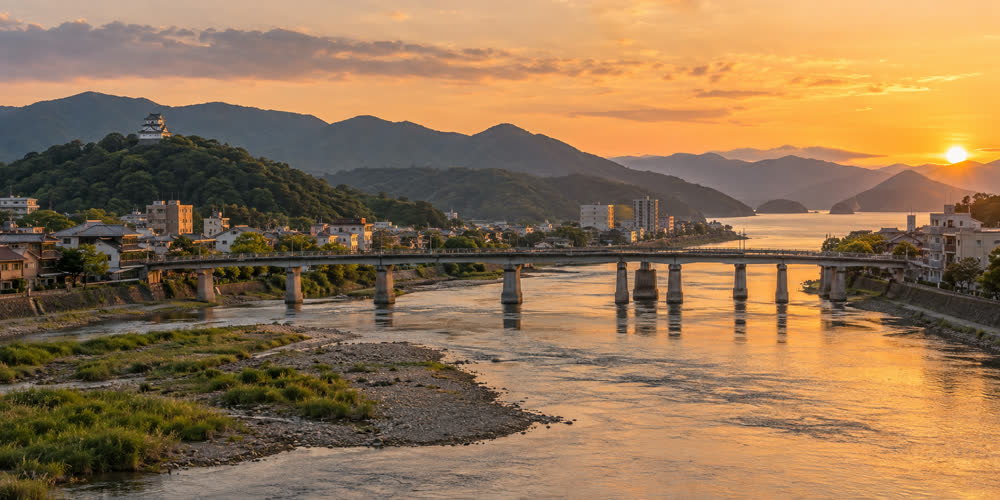

Kagami Bridge
| Kagami Bridge 鏡橋 | |
|---|---|
 The Kagami River in central Harukawa, with Kagami Bridge and the castle keep in the distance | |
| Crosses | Kagami River |
| Locale | Harukawa, Minori Prefecture |
| Design | Nine-span reinforced concrete arch |
| Total length | 386 m |
| Width | 22 m (since 1978) |
| Opened | 20 March 1932 |

Kagami Bridge (鏡橋, Kagami-bashi) is a road bridge over the Kagami River in central Harukawa, Minori Prefecture. It is a nine-span reinforced concrete arch bridge, 386 m long, and links the Gofukumachi district on the east bank with the districts on the west bank. Of the three bridges in the city center it is the middle one, between the Sagimai Bridge upstream and the Shiomi Bridge downstream.[1]
The bridge opened on 20 March 1932, replacing a wooden bridge of 1879. It survived the air raid of 29 July 1945 with minor damage and was widened from 14 m to 22 m in 1978, when the roadway was given four lanes.[2]
During the Harukawa Lantern Festival on the second weekend of October, about 12,000 floating lanterns are released on the Saturday evening just downstream of the bridge and drift 1.4 km to the Shiomi Bridge, where nets collect them. The bridge, with the keep of Harukawa Castle behind it, is one of the most photographed views of the city.